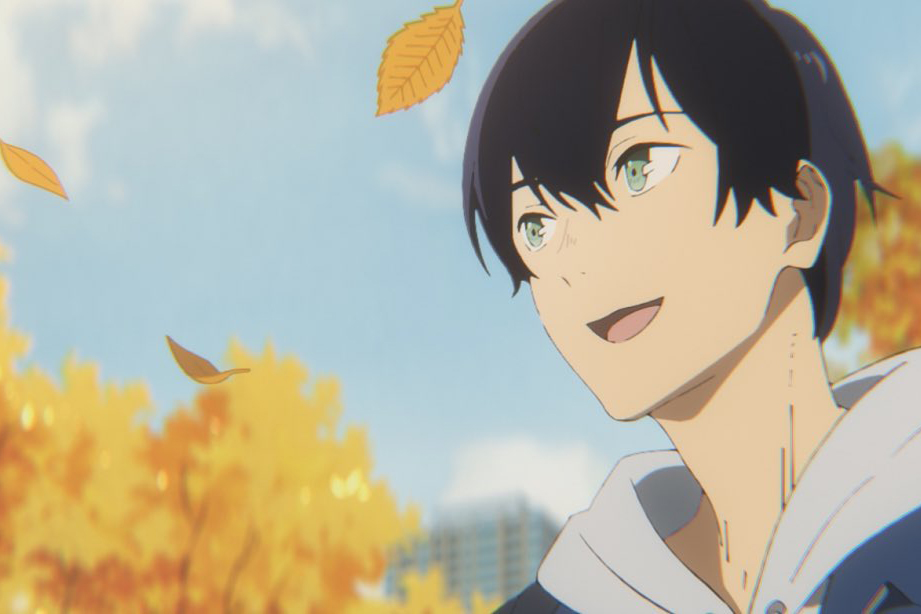
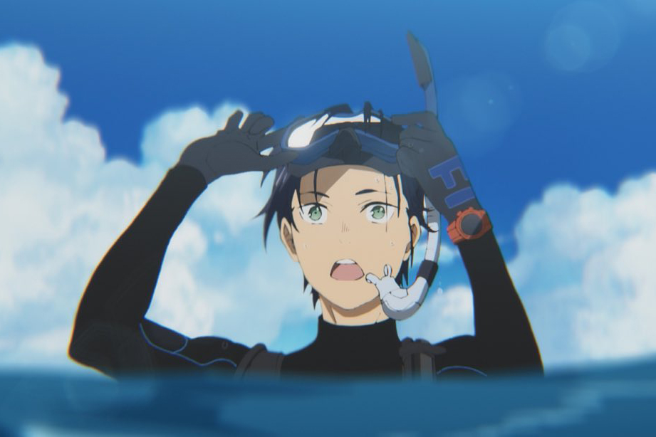
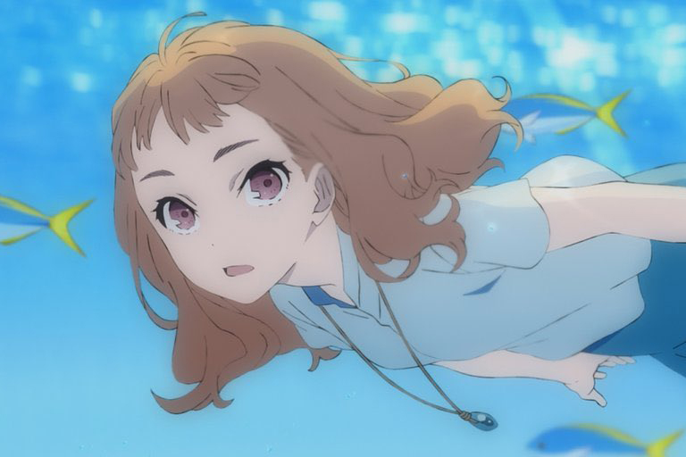
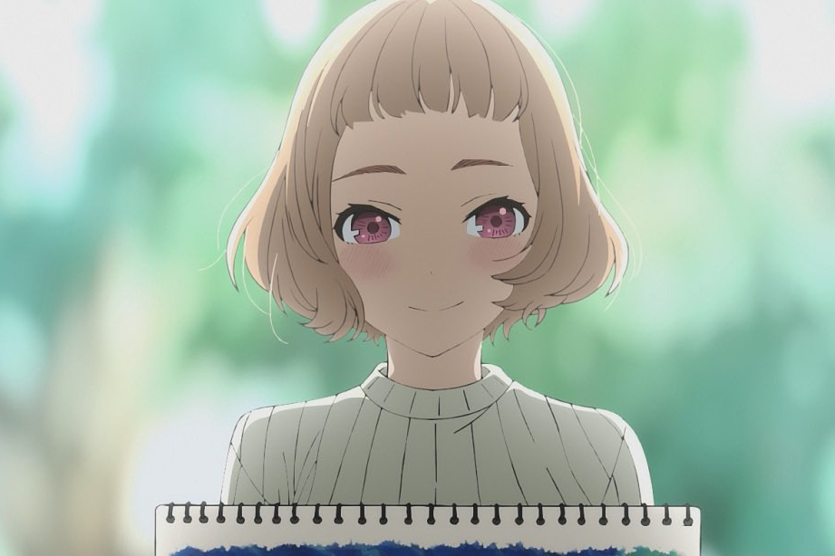

INTRODUCTION
その“恋”は、世界の輝きを教えてくれたー
芥川賞作家・田辺聖子の名編で、2003年に妻夫木聡・池脇千鶴主演で実写映画化もされた
『ジョゼと虎と魚たち』が、アニメーション映画となって登場する。描かれるのは、瑞々しく
真っすぐな純愛の中、お互いと自分自身を知って前に進んでいく姿。アニメーションだから
描き出せる、リアルにしてイマジネーションに満ち満ちた日常の輝き、恋愛のときめき、
人生のきらめきがスクリーンと物語からあふれ出る。
恒夫を演じるのは、若手人気実力派俳優の中川大志。ジョゼには、活躍目覚ましい清原果耶。
共に国内長編アニメーションの主演声優は初となる。監督は、『おおかみこどもの雨と雪』
助監督や『ノラガミ』シリーズの監督を手掛けたタムラコータロー。脚本を桑村さや香、
キャラクター原案を絵本奈央、キャラクターデザイン・総作画監督を飯塚晴子が担当。
アニメーション制作は、数多くの人気作を手掛けてきたボンズ。また主題歌には、Eveが決定。
約5億万回のＭＶ総再生回数を誇り、まさに日常の痛みと喜びを飾らない言葉と洗練された
メロディで切り取る才能が、本作に音楽で寄り添う。
アニメーションと小説、気鋭のキャストとスタッフ、そして恒夫とジョゼ──かけがえのない出会い
から新しい時間、止まっていた時間が回り始める。ここにあるのは、心に刺さる等身大の魅力と、
心を躍らせるロマンに満ちた“新しいジョゼ”。誰もがきっと、ジョゼで恒夫。誰かと出会い、触れ
合い知る、新しい自分と世界。
STORY
趣味の絵と本と想像の中で、自分の世界を生きるジョゼ。
幼いころから車椅子の彼女は、ある日、危うく坂道で転げ落ちそうになった
ところを、大学生の恒夫に助けられる。
海洋生物学を専攻する恒夫は、メキシコにしか生息しない幻の魚の群れを
いつかその目で見るという夢を追いかけながら、バイトに明け暮れる勤労学生。
そんな恒夫にジョゼとふたりで暮らす祖母・チヅは、あるバイトを持ち掛ける。
それはジョゼの注文を聞いて、彼女の相手をすること。
しかしひねくれていて口が悪いジョゼは恒夫に辛辣に当たり、
恒夫もジョゼに我慢することなく真っすぐにぶつかっていく。
そんな中で見え隠れするそれぞれの心の内と、縮まっていくふたりの心の距離。
その触れ合いの中で、ジョゼは意を決して夢見ていた外の世界へ
恒夫と共に飛び出すことを決めるが……。




STAFF
原作 田辺聖子「ジョゼと虎と魚たち」(角川文庫刊)
監督 タムラコータロー
脚本 桑村さや香
キャラクター原案・コミカライズ 絵本奈央
キャラクターデザイン・総作画監督 飯塚晴子
コンセプトデザイン loundraw (FLAT STUDIO)
劇中画 松田奈那子
プロダクションデザイン 平澤晃弘・片貝文洋・中村章子
画面設計 川元利浩
美術監督 金子雄司
色彩設計 梅崎ひろこ
撮影監督 神林剛
3DCG監督 三宅拓馬
編集 坂本久美子
音楽 Evan Call
音響監督 若林和弘
音響製作 ソニルード
アニメーション制作 ボンズ
主題歌・挿入歌 Eve「蒼のワルツ」／「心海」(TOY’S FACTORY)
配給 松竹／KADOKAWA
製作 『ジョゼと虎と魚たち』製作委員会